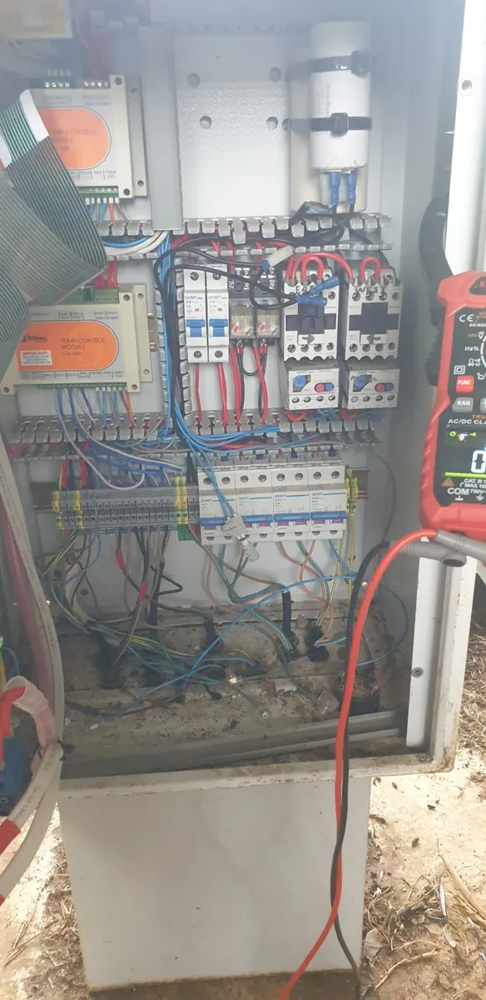

24-Hour Emergency Electrician in Byron Bay
Lost power, repeated tripping, sparking or a burning smell? Berryman Electrical provides urgent electrical fault finding and repairs for homes and businesses.
26+ years of electrical experience, including eight years handling after-hours breakdowns in Sydney.
Call day or night. Current attendance time and applicable charges are confirmed before you book.
Help when the power or equipment lets you down.
Power loss
A home, business, circuit or part of the property has lost power. Tell us which areas and equipment are affected.
Repeated tripping
A safety switch or circuit breaker keeps operating, or will not stay on. Stop repeatedly resetting it and arrange fault finding.
Burning smells or heat damage
A hot fitting, scorch marks, unusual buzzing or a burning smell needs urgent assessment. Keep clear; call 000 for fire or immediate danger.
Switchboard faults
Unexpected tripping, loss of supply or visible damage at the board. Keep away from unsafe equipment and describe the symptoms when calling.
Water or storm damage
Water near wiring, fittings or electrical equipment. Do not touch wet equipment or enter water that may be electrically energised.
Business breakdowns
Failed circuits, equipment supplies, motors or controls affecting trading or production. Tell us what has stopped and what is at stake.
Finding the cause is where experience counts.
Michael Berryman has more than 26 years of electrical experience, including eight years of emergency after-hours machinery and breakdown work in Sydney.
That background is particularly useful when a property or business is down and the cause is unclear. The priority is to make the situation safe, trace the fault methodically and explain the repair options.
Urgent work can involve fixed wiring, switchboards, equipment supplies or controls. We investigate what has actually failed before deciding which parts or repairs are needed.

Know the next step before booking.
Call to confirm attendance
Tell us your suburb, what has happened and whether there is a safety concern or business interruption. We confirm current availability and the likely attendance time.
After-hours pricing explained
After-hours rates and minimum attendance charges apply. We confirm the applicable minimum, labour rates, GST and any chargeable travel before you book. Parts and further repairs are discussed as the fault becomes clear.
Call & confirm
Describe the problem and agree on attendance and charges.
Make safe
Assess the installation and address the immediate electrical hazard.
Trace the fault
Inspect and test the affected circuits or equipment.
Repair & explain
Complete agreed repairs where practical, or explain the parts and further work needed.
If the problem can safely wait, ask about the next available normal-hours visit.
Check availability · 0424 157 002Byron Bay and nearby Northern Rivers.
Emergency electrical work in Byron Bay, Suffolk Park, Ewingsdale and Broken Head, with nearby coverage including Mullumbimby, Brunswick Heads, Bangalow and Ocean Shores. Tell us your suburb so attendance and any travel charge can be confirmed.
Before you call.
Do you take emergency electrical calls 24 hours a day?
Yes. Call 0424 157 002 day or night, including weekends, for urgent electrical faults. We confirm current availability, the likely attendance time and applicable charges before booking a call-out.
How quickly can you attend?
Tell us your suburb and what has happened. We confirm the current attendance time based on the jobs already underway, your location and the fault. Call to check before making arrangements.
What does an after-hours call-out cost?
After-hours rates and minimum attendance charges apply. We explain the applicable minimum, labour rates, GST and any chargeable travel before you book. Parts and further repairs are discussed as the fault becomes clear.
Can the fault be repaired during the visit?
A straightforward repair may be completed during the visit when it is safe, suitable parts are available and the work is agreed. If more work is needed, we explain what has been made safe and the next repair steps.
What if the problem can wait until normal working hours?
Tell us when you call. If the fault can safely wait, we can discuss the next available normal-hours visit. Do not keep resetting a tripping safety switch or use equipment that appears damaged.
Do you attend commercial and industrial breakdowns?
Yes. We investigate urgent electrical faults affecting business premises, circuits, switchboards, equipment supplies, motors and controls. Tell us what equipment has stopped and how the fault is affecting operations.
Tell us what has stopped working.
Call Berryman Electrical for urgent electrical fault finding, day or night.